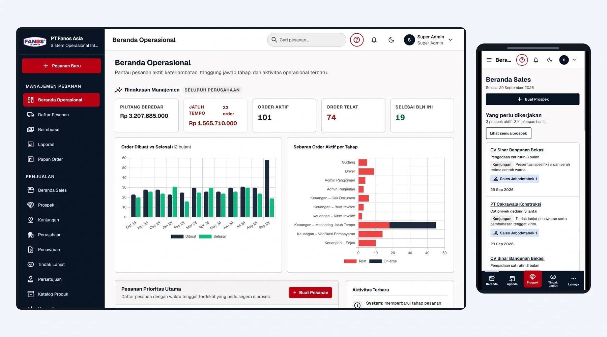

01
Ditulis dari nol
Situs tema yang mirip ratusan lainnya
02
Diserahkan dalam keadaan berjalan
File zip lalu ditinggal
03
Satu tim yang bertanggung jawab
Tiga vendor saling menunjuk
Bukan dari ide bisnis. Dari tiga masalah yang terus kami lihat dari dalam.

Desain, pengembangan, dan operasional perlu saling terhubung.
Awalnya
Sebelum Renoir, pendirinya membangun sistem produksi untuk perusahaan yang sedang berjalan. Software yang dibuka tim mereka setiap pagi.

Masalah 01
Tema dengan logo Anda: mirip ratusan situs lain, lambat di HP pelanggan, sulit dibaca mesin pencari, dan tidak bisa diubah tanpa menelepon seseorang.

Apa yang ditawarkan?
Apa yang sesuai kebutuhan?
Bagaimana memulainya?
Masalah 02
Vendor mengirim file lalu pergi. Anda memegang software yang tidak bisa di-deploy, di server yang tidak dikonfigurasi, tanpa monitoring.
Website atau sistem yang dibangun.
Deployment, domain, dan SSL.
Akses dan dokumentasi serah terima.
Masalah 03
Desainer, developer, hosting. Tiga kontrak, tiga jadwal, dan saat ada yang rusak, tiga pihak saling menunjuk.

Alur dan tampilan.
Fungsi yang dibangun.
Tempat sistem dijalankan.
Jawabannya
Renoir merancang, menulis dari nol, menjalankan di production, dan terus menjaganya.
Situs tema yang mirip ratusan lainnya
File zip lalu ditinggal
Tiga vendor saling menunjuk
Mulai percakapan
Kalau salah satu dari tiga masalah ini terasa akrab, ceritakan ke kami.